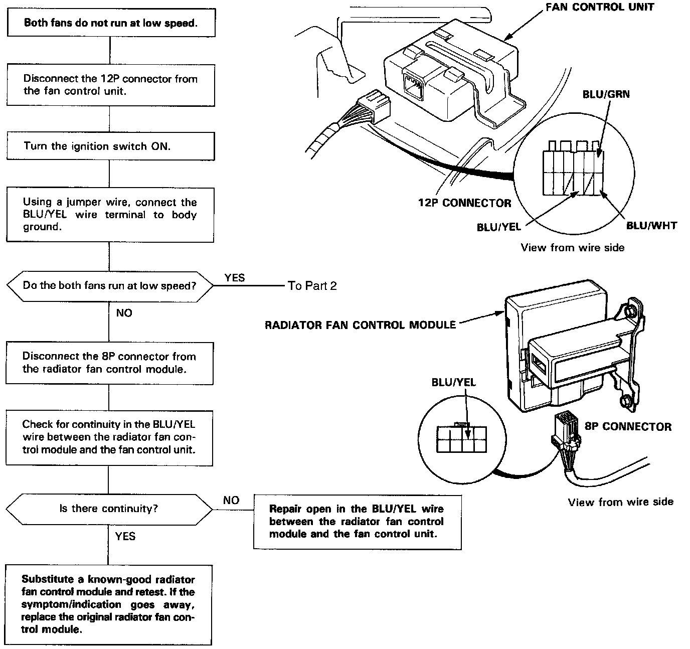
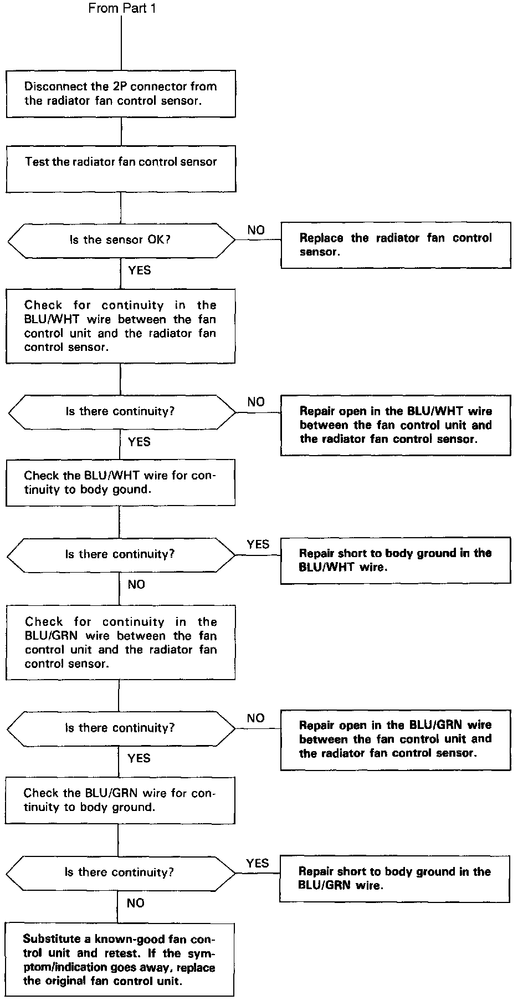

Operation CHARM
: Car repair manuals for everyone.
Home
>>
Acura
>>
1994
>>
Legend Sedan V6-3206cc 3.2L SOHC FI
>>
Repair and Diagnosis
>>
Engine, Cooling and Exhaust
>>
Cooling System
>>
Radiator Cooling Fan
>>
Radiator Cooling Fan Motor
>>
Testing and Inspection
>>
Symptom Related Diagnostic Procedures
>>
Diagnosis By Symptom - Automatic Climate Control
>>
Both Fan Motors Do Not Run at Low Speed
Both Fan Motors Do Not Run at Low Speed
Both Fans Low Speed, Part 1 Of 2:

Both Fans Low Speed, Part 2 Of 2:
